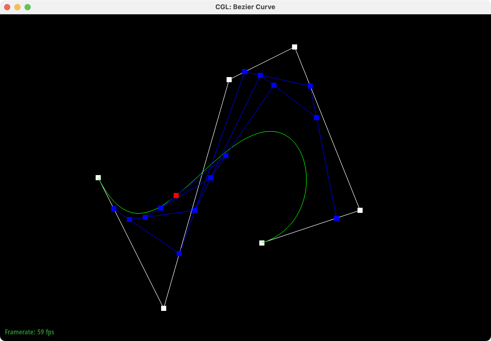
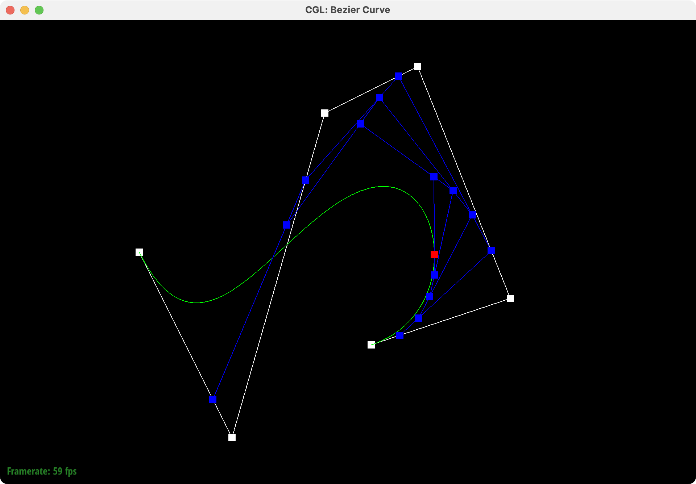
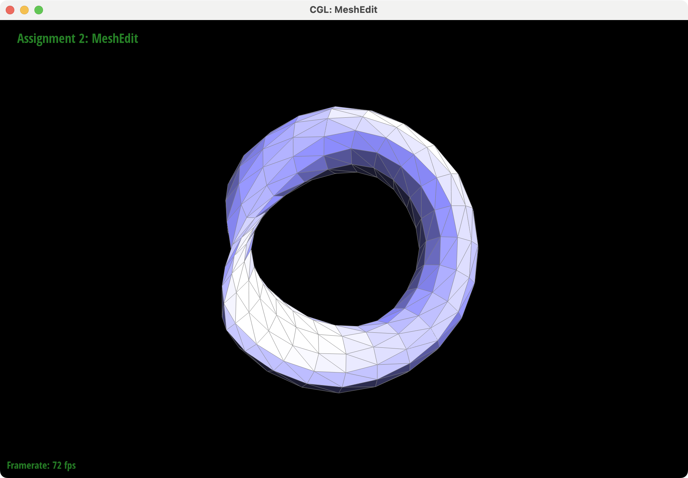
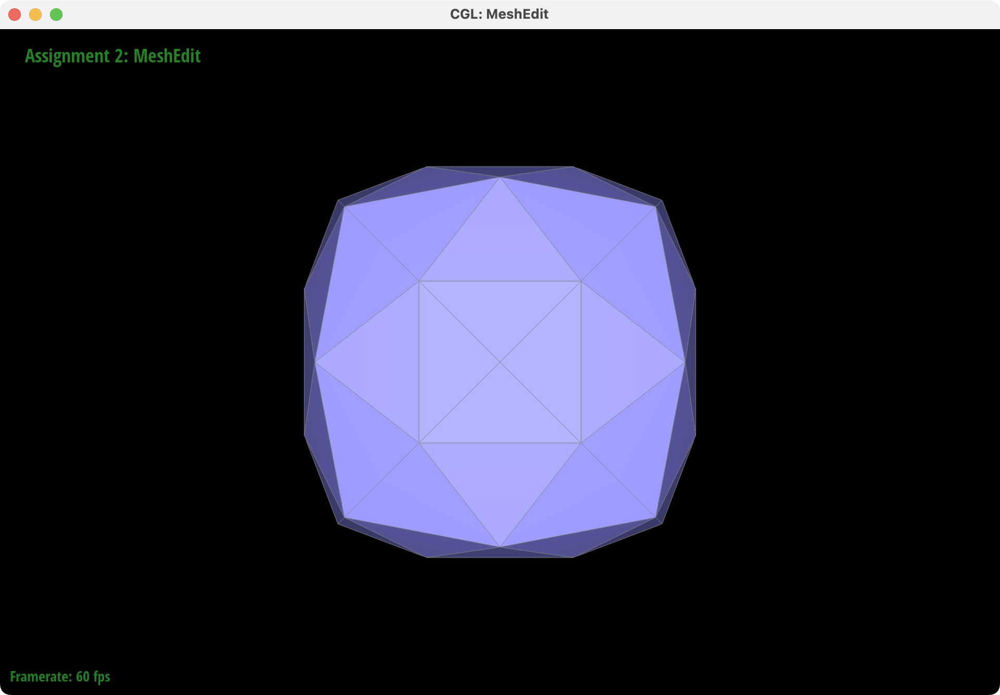

Overview
This project explored geometric modeling! I learned how to create smooth Bezier curves and surfaces using de Casteljau's algorithm. I also implemented various methods for manipulating triangle meshes, including upsampling with loop subdivision, edge flips and splits, and Phong shading with area-weighted vertex normals. I enjoyed experimenting with geometric meshes to build cool models and render fun patterns.
Section I: Bezier Curves and Surfaces
Part 1: Bezier Curves with 1D de Casteljau Subdivision
Briefly explain de Casteljau's algorithm and how you implemented it in order to evaluate Bezier curves.De Casteljau's algorithm is a recursive algorithm for evaluating Bezier curves, given the control points (level 0) and a parameter \(t\) in the range [0, 1]. At each level, we linearly interpolate between each pair of adjacent points from the previous level, producing a new set with one fewer point. This process is repeated until we are left with only one point, which lies on the Bezier curve defined by the control points. By varying \(t\) from 0 (corresponding to the leftmost control point) to 1 (the rightmost), we can trace the complete Bezier curve.
Take a look at the provided .bzc files and create your own Bezier curve with 6 control points of your choosing. Use this Bezier curve for your screenshots below. Show screenshots of each step / level of the evaluation from the original control points down to the final evaluated point. Press E to step through. Toggle C to show the completed Bezier curve as well.
|
|
|
|
|
|
|
|
Show a screenshot of a slightly different Bezier curve by moving the original control points around and modifying the parameter \(t\) via mouse scrolling.
|  | ||
|  |
Part 2: Bezier Surfaces with Separable 1D de Casteljau
Briefly explain how de Casteljau algorithm extends to Bezier surfaces and how you implemented it in order to evaluate Bezier surfaces.De Casteljau's algorithm can be easily extended to Bezier surfaces (and higher dimensions), given a grid of control points and two parameters \(u\) and \(v\), both in the range [0, 1]. To compute a point on the surface, we interpolate in two (typically orthogonal) directions. We first repeat the 1D algorithm from above with parameter \(u\) on each row of the control points, then one final time with parameter \(v\) on the resulting set of points. By separately varying \(u\) and \(v\) from 0 to 1, we can evaluate the complete Bezier surface.
Show a screenshot of bez/teapot.bez (not .dae) evaluated by your implementation.
| teapot.bez | ||
| wavy_cube.bez |
Section II: Triangle Meshes and Half-Edge Data Structure
Part 3: Area-Weighted Vertex Normals
Briefly explain how you implemented the area-weighted vertex normals.Computing area-weighted vertex normals, as its name suggests, involved calculating a weighted average of the normals of neighboring triangles. I iterated through the non-boundary faces incident to the vertex, summed over all areas, and normalized the result. For each face, I subtracted the shared vertex from the other two vertices for two sides of the triangle, and took half their cross product.
Show screenshots of dae/teapot.dae (not .bez) comparing teapot shading with and without vertex normals. Use Q to toggle default flat shading and Phong shading.
|
|
|

|
|
|
|
|
Part 4: Edge Flip
Briefly explain how you implemented the edge flip operation and describe any interesting implementation / debugging tricks you have used.Implementing edge flips required finding all relevant mesh elements and reassigning their pointers into the flipped orientation. These components consisted of the half-edges, edges, vertices, and faces belonging to the enclosing polygon the edge is contained in.
Show screenshots of a mesh before and after some edge flips.
Write about your eventful debugging journey, if you have experienced one.
Debugging was primarily just double-checking triple-checking the pointers, referring to the diagram I drew.
Part 5: Edge Split
Briefly explain how you implemented the edge split operation and describe any interesting implementation / debugging tricks you have used.Implementing edge splits followed a similar process as edge flips in reassigning pointers of mesh elements, but at a more complex scale. The main difference was that it required creating and managing the new elements from the split: six half-edges, three edges, two faces, and one vertex.
Show screenshots of a mesh before and after some edge splits.
Show screenshots of a mesh before and after a combination of both edge splits and edge flips.
Write about your eventful debugging journey, if you have experienced one.
Debugging turned into triple-checking quadruple-checking the pointers with my diagram and frustration >:(
Part 6: Loop Subdivision for Mesh Upsampling
Briefly explain how you implemented the loop subdivision and describe any interesting implementation / debugging tricks you have used.I followed the approach detailed in the spec for loop subdivision to divide each face into four triangles. I first calculated the new positions for current vertices and new vertices with the subdivision rules based on weighted positions of neighboring vertices. I then split every current edge (connecting current vertices) and flipped every new edge connecting an old vertex with a new vertex. Finally, I set the positions of all vertices to their updated positions computed in the first step.
Take some notes, as well as some screenshots, of your observations on how meshes behave after loop subdivision. What happens to sharp corners and edges? Can you reduce this effect by pre-splitting some edges?
Meshes become smoother and more even with repeated loop subdivision. The sharp corners and edges seen in the original meshes below lose definition. For instance, the icosahedron approaches a sphere and the jagged torus approaches a ring. This effect is especially pronounced because both meshes are already similar to their limit shapes, but pre-processing (such as edge collapses) can help somewhat. It is possible to try to keep sharp corners and edges with additional techniques like crease preservation and controlling crease weights.
| icosahedron/input.dae |
| icosahedron/edgeCollapse.dae |
| torus/input.dae |
|  | ||
| torus/edgeCollapse.dae |
Load dae/cube.dae. Perform several iterations of loop subdivision on the cube. Notice that the cube becomes slightly asymmetric after repeated subdivisions. Can you pre-process the cube with edge flips and splits so that the cube subdivides symmetrically? Document these effects and explain why they occur. Also explain how your pre-processing helps alleviate the effects.
The cube becomes asymmetrical after a few iterations of loop subdivision because the input mesh is uneven. Each side of the cube is only split once along a diagonal edge into two faces.
As loop subdivision divides mesh faces into four smaller triangles (notice the diagonal lines on the first subdivision), the cube gets slightly warped along the starting edge directions.
To fix this issue, I pre-processed the cube by splitting each original diagonal edge to form new edges along the opposite diagonal, making all six sides identical.
The sides of the cube are now split into four symmetrical triangles, which remain evenly split in further iterations (and form pretty geometric patterns!).
| cube.dae (original) |
|  | ||
| cube.dae (pre-processed) |